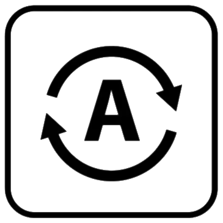

| Mode: -- |
| Set |
 Off Off
|
| 🔥 Heat |
| ❄ Cool |
|  Auto |
--
Target:
| Fan Mode: -- |
| Set |
|
Auto
|
| Auto/Circulate |
| On |
Model: -- (FW: --)
Name: --
Main | Day/week/month graph | Schedule
API Info | API Gateway | Project Github Repo
Manufacturer Documentation:
API Documentation
CT30 Owner's Manual | CT50 Owner's Manual
CT80 Owner's Manual | 3M50 Owner's Manual
- In the LEFT box, set the HVAC mode. Auto should automatically
detect which mode to use, but isn't reliable.
- In the MIDDLE box, use the slider to set the temperature. There
is a delay of a few seconds while the thermostat sets the new
temperature. With the manually set temperature, it will set
"Hold" mode. To switch back to scheduled mode, touch the red
"Hold".
- In the RIGHT box, set the fan mode. Off or Auto will
automatically turn the thermostat on and off. In the API
documentation, they are described as
0: AUTO
1: AUTO/CIRCULATE
2: ON
If you want the fan off, set the fan to mode auto, and the HVAC mode to off.
For normal operation, set it to Auto.
- The next boxes down show the thermstat activity history.
The blue line is the actual temperature, read at the thermostat.
The red line is the target temperature. That is, the temperature you set the thermostat to.
The yellow bar shows if the HVAC is cycled on or off. No bar means error.
A half bar means the HVAC is cycled OFF
A full bar means the HVAC is cycled ON
- The thermostat scheduler is under the Schedule link above. You can set 4 times and temperatures per day.